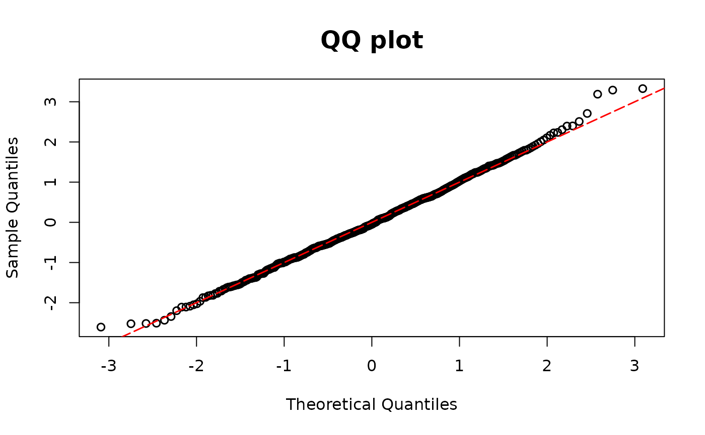

Calculates DPIT proposed residuals for model for semi-continuous outcomes.
resid_2pm can be used either with model0 and model1 or with part0 and part1 as arguments.
Usage
resid_2pm(model0, model1, y, part0, part1, plot=TRUE, scale = "normal",
line_args= list(), ...)Arguments
- model0
Model object for 0 outcomes (e.g., logistic regression)
- model1
Model object for the continuous part (gamma regression)
- y
Semicontinuous outcome variables
- part0
Alternative argument to
model0. One can supply the sequence of probabilities \(P(Y_i=0),~i=1,\ldots,n\).- part1
Alternative argument to
model1. One can fit a regression model on the positive data and supply their probability integral transform. Note that the length ofpart1is the number of positive values inyand can be shorter thanpart0.- plot
A logical value indicating whether or not to return QQ-plot
- scale
You can choose the scale of the residuals among
normalanduniformscales. The default scale isnormal.- line_args
A named list of graphical parameters passed to
graphics::abline()to modify the reference (red) 45° line in the QQ plot. If left empty, a default red dashed line is drawn.- ...
Additional graphical arguments passed to
stats::qqplot()for customizing the QQ plot (e.g.,pch,col,cex,xlab,ylab).
Details
The DPIT residuals for regression models with semi-continuous outcomes are $$\hat{r}_i=\frac{\hat{F}(Y_i|\mathbf{X}_i)}{n}\sum_{j=1}^n1\left(\hat{p}_0(\mathbf{X}_j)\leq \hat{F}(Y_i|\mathbf{X}_i)\right), i=1,\ldots,n,$$ where \(\hat{p}_0(\mathbf{X}_i)\) is the fitted probability of zero, and \(\hat{F}(\cdot|\mathbf{X}_i)\) is the fitted cumulative distribution function for the \(i\)th observation. Furthermore, $$\hat{F}(y|\mathbf{x})=\hat{p}_0(\mathbf{x})+\left(1-\hat{p}_0(\mathbf{x})\right)\hat{G}(y|\mathbf{x})$$ where \(\hat{G}\) is the fitted cumulative distribution for the positive data.
In two-part models, the probability of zero can be modeled using a logistic regression, model0,
while the positive observations can be modeled using a gamma regression, model1.
Users can choose to use different models and supply the resulting probability transforms.
part0 should be the sequence of fitted probabilities of zeros \(\hat{p}_0(\mathbf{X}_i) ,~i=1,\ldots,n\).
part1 should be the probability integral transform of the positive part \(\hat{G}(Y_i|\mathbf{X}_i)\).
Note that the length of part1 is the number of positive values in y and can be shorter than part0.
Examples
library(MASS)
n <- 500
beta10 <- 1
beta11 <- -2
beta12 <- -1
beta13 <- -1
beta14 <- -1
beta15 <- -2
x11 <- rnorm(n)
x12 <- rbinom(n, size = 1, prob = 0.4)
p1 <- 1 / (1 + exp(-(beta10 + x11 * beta11 + x12 * beta12)))
lambda1 <- exp(beta13 + beta14 * x11 + beta15 * x12)
y2 <- rgamma(n, scale = lambda1 / 2, shape = 2)
y <- rep(0, n)
u <- runif(n, 0, 1)
ind1 <- which(u >= p1)
y[ind1] <- y2[ind1]
# models as input
mgamma <- glm(y[ind1] ~ x11[ind1] + x12[ind1], family = Gamma(link = "log"))
m10 <- glm(y == 0 ~ x12 + x11, family = binomial(link = "logit"))
resid.model <- resid_2pm(model0 = m10, model1 = mgamma, y = y)

# PIT as input
cdfgamma <- pgamma(y[ind1],
scale = mgamma$fitted.values * gamma.dispersion(mgamma),
shape = 1 / gamma.dispersion(mgamma)
)
p1f <- m10$fitted.values
resid.pit <- resid_2pm(y = y, part0 = p1f, part1 = cdfgamma)